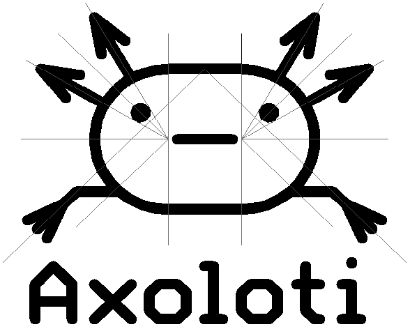

My guess is its got something to do with the ins and outs, the symbol shows 2 ins and 4 outs. ? 
An Axoloti Joke I Just Made Up
Gavin
#52
axoman
#53
I hate that, it's like with Goldfish living in a transparent bowl without even corners to help orientate themselves - it shouldn't be allowed.
Regards Axoloti and the logo, yup, I suspect it was drawn that way to represent the input/output aspect, and perhaps the Axolotl was chosen to represent due to it's regenerative nature. Technically, your Axoloti completely regenerates as an end product every time you flash something different to it. Just guessing though, only Johannes can answer that one.
Either way, neat idea (and logo) 
johannes
#54
The name was first used for a simple synth I developed in 24 hours at MusicHackDay Amsterdam in 2012. It could make some drone-ish fm sounds controlled via midi. Looking for a suitable name, I asked people at the table where I was hacking, and someone suggested Axolotl.
The animal is a wink to a few other species, the Chameleon and the Capybara.
I designed the logo myself (while I have no graphics design skills), using Eagle, a schematic/circuit board editor. Its limits (supporting only round-capped lines, polygons, arcs and circles) as graphical design software gives the logo its distinct look. The design is styled like an unusual component in an electronic schematic diagram. Yes, two inputs and 4 outputs does not reflect reality, but there is also midi, usb, sdcard etc, hard to represent it all...
This is how the "Vitruvian Axoloti" [wink] looks like:

Googl-ability was one reason: there was also "proce55ing" (versus processing), which used to be helpful when googling around, as including "processing" in a search query would give a lot of unrelated results.
Pronounce-ability was another reason, but I'm not quite sure it's effective.
Those reasons could be questioned or challenged but even if I'd want to change it, it'd be hard to change the whole internet.
axoman
#55
Never seen either of those machines at the links before!
You underestimate your graphic design skills, Johannes, and that's an interesting background. Funny enough, I was going to mention that the font looks circuit-board-like in my previous post, but I had no idea you used circuit design software to make it (very apt).
I hope none of those YouTube conspiracy theorists see a hidden "Illuminati Triangle" in Vitruvian Axoloti 
Then again, if they did, the publicity could sell millions of Axoloti boards!
Gavin
#56
Great story, it just took on a life of its own.
Dont need to rename, just add to it....
Axoloti Pi
Axoloti Nano
Axoloti Nano plus 3
STM32AXOLITI
axoman
#57
I can't imagine why you'd want to change the name anyway, it's a great name (and Logo).
If you'd chosen Axolotl as a name, you'd be buried among all the stuff about the creature. To change the name slightly was the right idea cause it gives it it's own, never-before-used, identity.
And as you said, helps with the search engines.
igel
#58
Axoloti is a beautiful name. It's humble, soft and I'm associating the different colours with different things you can do. The only thing is when I was googling I had to add "-axolotl" to get accurate results.
But that's not nessesary actually as all information needed are here in this forum.
I just wanted to repost my joke that got deleted previously.
Arnold Schoenberg walks into a bar: "gin, please... but no tonic!"